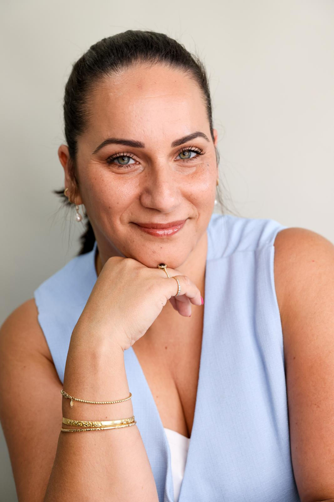
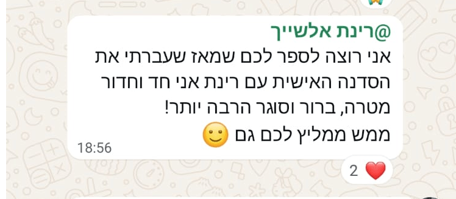
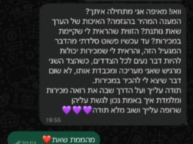
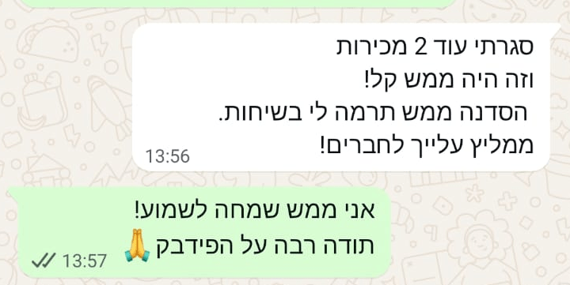
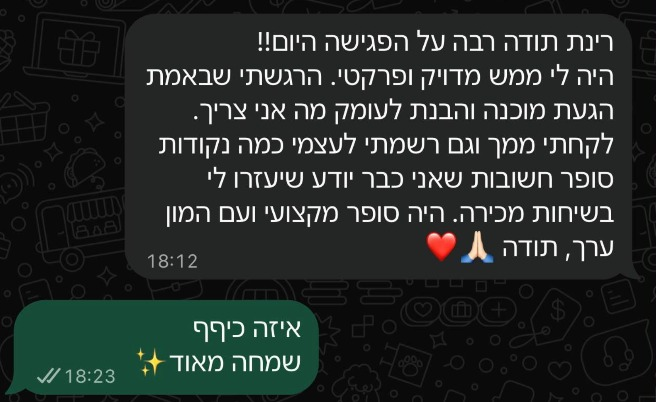
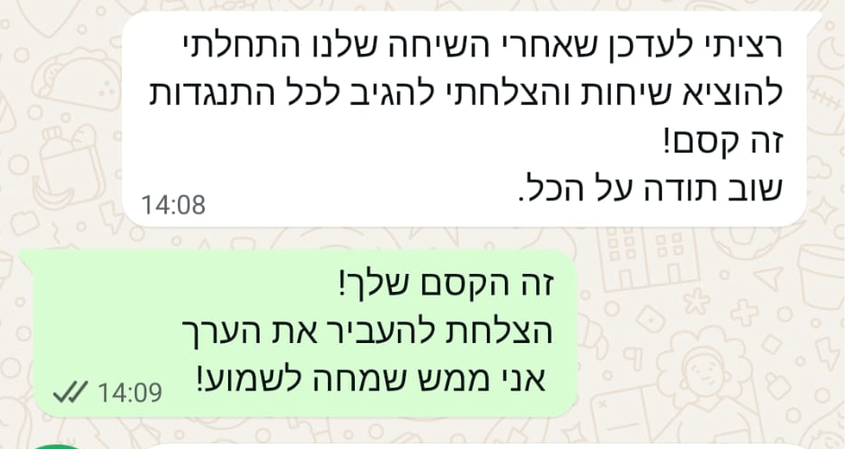
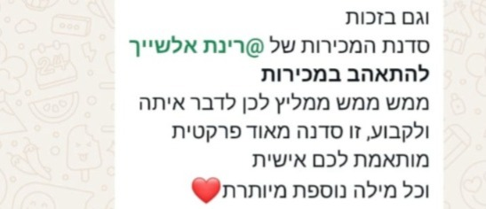
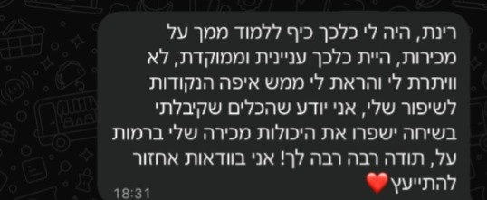
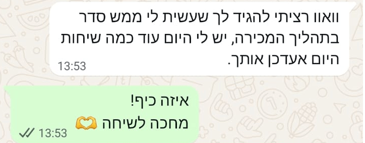

מכירות והשפעה · סדנת בוטיק לבעלי עסקים
יש לך הרבה מה לתת.איך מעבירים את זה בשיחת מכירה?
כשהשיחה מגיעה למחיר או ל״אני צריך לחשוב על זה״, קל לאבד את הכיוון. בסדנה נבנה דרך ברורה להוביל את השיחה, שמתאימה לאופי שלך ולעסק שלך.
לדעת מה לשאול. להציג ערך. להתקדם להחלטה.
בלי לשנן תסריטים ובלי להפעיל לחץ.
שיחת אבחון וסימולציה · 30 דקות · ללא עלות וללא התחייבות

- 06
- מפגשים מעשיים · פעם בשבוע, שעתיים
- 05
- משתתפים לכל היותר · מקום לתרגול וליחס אישי
- 1:1
- פגישה אישית עם רינת · עבודה ממוקדת על העסק שלך
הרגעים הקטנים שעוצרים את השיחה
העבודה שלך מצוינת.אבל במכירה, משהו עדיין נתקע.
-
מסבירים הרבה. לא בטוחים שהערך עובר.
סיפרת על השירות, על הניסיון ועל כל מה שכלול. ובסוף השיחה עדיין לא ברור אם הלקוח הבין איך זה יעזור לו.
-
המחיר עולה, והביטחון יורד.
פתאום מתחשק להוסיף עוד הסבר, להצדיק את הסכום או להציע הנחה לפני שהלקוח בכלל ביקש.
-
״אני צריך לחשוב״. ומה עכשיו?
רוצים לכבד את ההתלבטות, אבל גם להבין מה חסר. השיחה מסתיימת בלי לדעת אם ואיך ממשיכים.
אפשר ללמוד להוביל את הרגעים האלה
לא צריך לשנות את האופי שלך כדי למכור.צריך דרך שמתאימה לך, ולתרגל אותה.
הקשבה פעילה, סקרנות והיכולת להבין אנשים הן בסיס טוב לשיחת מכירה. בסדנה נחבר אותן לעוגנים שיעזרו לך לדעת איך להתקדם, גם כשהשיחה מפתיעה.
הפיצוח של רינת
עוגנים במקום תסריטים.
מפת דרכים לשיחה, עם מקום לשפה שלך. ארבעה עוגנים שיעזרו לך להבין איפה נמצאים ומה הצעד הבא.
-
עוגן 1
זהות וסמכות
ניהול השיחה מתוך העוצמה הטבעית שלך.
להציג את מה שיש לך להציע בשפה שנשמעת כמוך, מתוך חיבור למקצועיות ולערך שלך.
להרגיש בנוח להוביל.
-
עוגן 2
אבחון ושאלות מובילות
הובלת השיחה דרך הקשבה פעילה ושאלות עומק.
לשאול, להקשיב ולברר מה הלקוח באמת צריך, לפני שממהרים להסביר על הפתרון.
להבין לפני שמציעים.
-
עוגן 3
מניעת התנגדויות מראש
פירוק ה״יקר לי״ עוד לפני שהוא נאמר.
לזהות מה עומד מאחורי ההתלבטות ולענות באופן ענייני, בלי להתווכח ובלי למהר להנחה.
להישאר בשיחה גם כשיש ספק.
-
עוגן 4
הצגת המחיר והובלה להחלטה
להגיש את המחיר בביטחון מלא.
להציג את ההצעה והמחיר בבירור, לבדוק מה עוד דרוש להחלטה ולסכם צעד הבא.
לדעת איך ממשיכים.
כאן מתחילים לתרגל
את שיחת המכירה הבאה שלך אפשר להתחיל לשפר כאן.
נעבוד על המצבים שמעסיקים אותך בעסק. בסימולציות ובתרגול נזהה מה כבר עובד, ומה אפשר לעשות אחרת.
מבינים
מזהים את האתגר ואת העוגן שיכול לעזור להתמודד איתו.
מתרגלים
מתנסים בשיחה ובודקים איך הדברים נשמעים בקול שלך.
מדייקים
מקבלים משוב ומחדדים את השאלות, המסר וההובלה.
קבוצה קטנה. עבודה אישית.
עד 5 בעלי עסקים,כדי להתמקד באתגרי המכירה שלכם.
לצד ששת המפגשים הקבוצתיים, הסדנה כוללת פגישה אישית איתי וסימולציה על העסק שלך, וליווי בוואטסאפ בין המפגשים לשאלות ולהתייעצות.
נבדוק אם זו המסגרת המתאימה לךמה אנשים שעבדו עם רינת מספרים
״עשית לי ממש סדר בתהליך המכירה.״
המלצות מתוך החומרים שנמסרו · ממתינות לאישור פרסום ולשיוך מדויק לסוג השירות








נעים להכיר
אני רינת.גם אני למדתי למכור בדרך שלא התאימה לי.
בתחילת הדרך שלי בעולם המכירות עבדתי לפי תסריטים, דחפתי ולחצתי. סגרתי עסקאות, אבל סיימתי מותשת, עם תחושה שאני צריכה להיות מישהי אחרת כדי להצליח.
החיבור בין עולם המכירות לעולם האימון שינה את הדרך שלי. הבנתי שאפשר להוביל שיחה מתוך הקשבה פעילה, ביטחון ושפה שמתאימה לאדם שמנהל אותה.
אחרי 15 שנה בעולם המכירות והאימון, זו הדרך שאני מלמדת: לבנות עוגנים, לתרגל אותם, ולפתח יכולת מכירה שמרגישה שלך.
המטרה שלי היא שתדעו למכור בדרך שלכם.
רינת
האם זה בשבילך?
יש לך עסק.יש לך שיחות עם לקוחות.ורצון להשתפר בהן.
הסדנה מיועדת לבעלי עסקים שמוכרים בעצמם ורוצים דרך ברורה יותר לנהל את השיחה, גם אם מכירות מעולם לא הרגישו להם טבעיות.
כדאי לבדוק התאמה אם...
- קשה לך להעביר את הערך של השירות בשיחה.
- הצגת מחיר או התלבטויות של לקוחות מוציאות אותך מאיזון.
- חשוב לך למכור בלי להרגיש דחיפה או מלאכותיות.
- יש לך נכונות לתרגל, לקבל משוב ולנסות דרך חדשה.
זו סדנה שדורשת השתתפות ותרגול. היא אינה מבטיחה הכנסה מסוימת, ואינה תוכנית ליצירת לידים.
המסגרת
שישה מפגשים.זמן לעבוד על המכירות שלך.
פעם בשבוע, שעתיים בכל מפגש. קבוצה נפתחת עם ארבעה נרשמים, ועד חמישה משתתפים.
01 / נפגשים
פרונטלי בקריית אונו
שישה מפגשים בשעות הבוקר.
02 / נפגשים מכל מקום
קבוצה בזום
שישה מפגשים בשעות הערב.
את מועד פתיחת הקבוצה, היום, השעה והמחיר תקבלו בשיחת האבחון, לפני ההחלטה להירשם.
הצצה לנושאי הלימוד
- מפגש 1 · פיצוח הזהות וכלים אימוניים במכירות
- מפגש 2 · ניהול שיחת המכירה: תהליך מכירה אישי בעזרת עוגנים, השפעה וסגירה
- מפגש 3 · אמנות הסקרנות, ההובלה, השיקוף ופירוק התנגדויות
- מפגש 4 · השפה התקשורתית שלך מול השפה של הלקוח
- מפגש 5 · בהמשךטיוטה
- מפגש 6 · בהמשךטיוטה
לפני שמתקדמים
מותר להתלבט.בואו נעשה סדר.
אני לא טיפוס של מכירות. זה יכול להתאים לי?
בדיוק בשבילך. בעלי עסקים רבים מאמינים שמכירות זה ״כישרון מולד״, או שצריך להיות אגרסיבי כדי לסגור. בסדנה מגלים שמכירה היא תהליך הובלה טבעי שמבוסס על הזהות והאופי שלך, בלי תסריטים קפואים ובלי לשחק דמות.
מה עושים בשיחת האבחון?
30 דקות אישיות איתי, ללא עלות ובלי חובה להירשם. נדבר על האתגר המרכזי שלך בשיחות מכירה, נבחן את תהליך המכירה הקיים אצלך, נעשה סימולציה קצרה, ונבדוק יחד אם הסדנה היא הצעד הנכון בשבילך.
העסק שלי חדש. זה מוקדם מדי?
ההפך הוא הנכון. לבנות תהליך מכירה בריא ונכון כבר מההתחלה חוסך לך חודשים של תסכול, שיחות מבוזבזות ואמונות מעכבות מול כסף.
ואם אני חושש לעשות סימולציה מול אחרים?הצעה
זה טבעי, ורוב המשתתפים מגיעים עם אותה מחשבה. הסימולציות הן בקבוצה של עד חמישה אנשים שנמצאים בדיוק באותו מקום, ומתחילים בקטן. ויש גם את הפגישה האישית איתי, שבה מתרגלים לבד, בלי קהל.
כמה הסדנה עולה?
את ההצעה המלאה והמחיר אני שולחת רק לאחר שיחת האבחון, כדי לוודא ששני הצדדים בטוחים שהסדנה היא המענה המדויק לעסק שלך.
הצעד הראשון הוא שיחה
איפה שיחת המכירהשלך נתקעת?
נקדיש לזה 30 דקות. נכיר את העסק, נעשה סימולציה קצרה ונבדוק אם הסדנה היא הצעד הנכון בשבילך.
אישית עם רינת · ללא עלות · ללא התחייבות
הפרטים אצלי.
אני עוברת על התשובות שלך וחוזרת אליך בהקדם לתאם את שיחת האבחון והסימולציה.
בינתיים, מזמינה אותך לקהילה שלי: קבוצת וואטסאפ שקטה, עם טיפים על מכירות ואתגרים מדי פעם.
להצטרפות לקבוצהטיפים על מכירות בהשפעה גם באינסטגרם שלי: @rinat_alshech
הדגמה: הפרטים לא נשלחו לשום מקום.